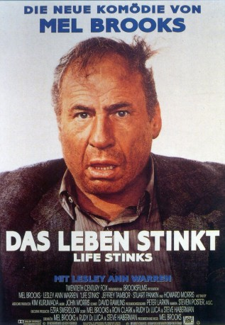
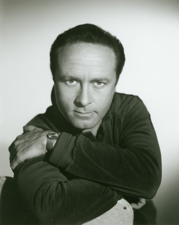
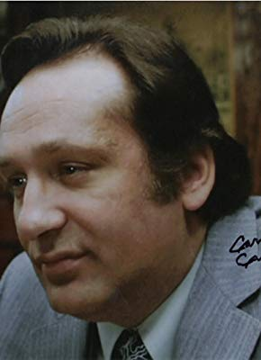

#1779 Das Leben Stinkt
Alternativ: Life Stinks
 
 IMDB-Wertung: 5.8 / 10
IMDB-Wertung: 5.8 / 10  Metascore: 54
Metascore: 54 
Der Milliardär Goddard will ein Slum in Los Angeles aufkaufen um dort zu bauen. Dafür lässt er sich mit Konkurrent Crasswell auf eine Wette ein: Wenn er es schafft 30 Tage ohne Geld im Slum zu überleben, bekommt er das Grundstück. Doch alles läuft anders als Goddard sich das vorgestellt hatte.
Jahr: 1991
Dauer: 92 Minuten
FSK: 12
Land: USA Studio: MGMTonspuren:
Untertitel:
Auflösung: 1080p (1920x1040) Größe: 6789 MB
Genre: Komödie
Regisseur:  Mel Brooks
Mel Brooks
Drehbuch: Mel Brooks, Ron Clark, Rudy De Luca, Steve Haberman, Mel Brooks
Soundtrack: John Morris
Darsteller:
 Mel Brooks als Goddard Bolt
Mel Brooks als Goddard Bolt Lesley Ann Warren als Molly
Lesley Ann Warren als Molly Jeffrey Tambor als Vance Crasswell
Jeffrey Tambor als Vance Crasswell Stuart Pankin als Pritchard
Stuart Pankin als Pritchard-  Howard Morris als Sailor
 Michael Ensign als Knowles
Michael Ensign als Knowles Billy Barty als Willy
Billy Barty als Willy Brian Thompson als Mean Victor
Brian Thompson als Mean Victor Raymond O'Connor als Yo
Raymond O'Connor als Yo James Van Patten als Wheelchair Attendant
James Van Patten als Wheelchair Attendant Mike Pniewski als Male Nurse
Mike Pniewski als Male Nurse Marianne Muellerleile als Head Nurse
Marianne Muellerleile als Head Nurse Anne Betancourt als Nurse
Anne Betancourt als Nurse Larry Cedar als Paramedic
Larry Cedar als Paramedic Brad Grunberg als Burrito-Eating Bum
Brad Grunberg als Burrito-Eating Bum- Paul Brinegar als Old Bellboy
- Raf Mauro als Hors d'Oeuvres Vagrant at Party
- Jack DeLeon als Pompous Party Guest
- Jennifer Warren als (uncredited
- Rudy De Luca als J. Paul Getty
- Teddy Wilson als Fumes
 Matthew Faison als Stevens
Matthew Faison als Stevens-  Carmine Caridi als Flophouse Owner
- Sammy Shore als Reverend at Wedding
- Frank Roman als Spanish Interpreter
- Marvin Braverman als Dr. Kahahn
 Robert Ridgely als Fergueson
Robert Ridgely als Fergueson- John Welsh als Dodd
 Stanley Brock als Store Owner
Stanley Brock als Store Owner- Kathryn Skatula als Nurse
- Robin Shepard als Nurse
- Angela Gordon als Capacity Nurse
- Mary Watson als Newscaster
- Saida Pagan als Newscaster
- Tamara Taylor als Newscaster
- Henry Kaiser als Newscaster
- Danny Wells als Mercedes Driver
- Christopher Birt als Paramedic
- Clifton Wells als Taco Stand Owner
- George Berkeley als Derelict Outside Flophouse
- Anthony Messina als Policeman
- David Correia als Policeman
- Helene Winston als Society Patron
- Terrence Williams als Boy Dancing in Doorway
- Joan Crosby als Woman at Fire
- Ira Miller als Man at Fire
- Jim Mapp als Blind Man
- Sam Menning als Old Wino
- Ralph Ahn als Chinese Cook
- Stu Gilliam als Desmond
Datei: X:\1991\Leben Stinkt, Das (1991, FSK12, 1920x1040).mkv seit 19.08.2015
Festplatte: HD 1987-1991
 Es gibt insgesamt 53 Filme in der Gruppe '1991'
Es gibt insgesamt 53 Filme in der Gruppe '1991'